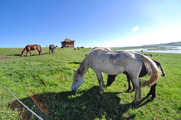

序言
随着网络的发展，浏览器具备更强的渲染更高级代码的能力。而CSS3技术的发展，使文档的呈现变得更加的生动有趣。
本文将带您走的更远，看一看变换(transformation)、过渡(transition)和动画(animation)等更高级的CSS3技术。我们将涉及代码本身、浏览器支持以及一些可以正确地展示这些新属性是如何即提升你的设计又增强整体用户体验的例子。
简介
CSS3 Transform 是一个非常强大的属性，让你能够更灵活的操作文档中的元素。Transform属性实现了一些可用SVG实现的同样的功能。它可用于内联(inline)元素和块级(block)元素。它允许我们旋转(rotate)、缩放(scale)、倾斜(skew)和移动(translate)元素。阅读详细»
CSS3 Transition 是一个涉及到元素过渡效果的属性。让你能够实现元素属性从静止状态到激活状态的转变。比如：元素背景色的变换：静止状态(深蓝色背景) ~ 激活状态(浅蓝色背景)。阅读详细»
CSS3 Animation 是名符其实的动画属性，如果配合Transform使用，将使你的页面变得生动。而且相对于使用脚本实现的动画，其拥有更加高效的性能。阅读详细»
以上特性也是可以通过JavaScript事件触发，希望通过我们比较详细的叙述，让您更容易把这些特性整合到文档中去。在接下来的内容中，我们会通过例子来讲述2D和3D的变换以及动画。最后还得提醒一句，请使用支持CSS Animations和Transforms属性的浏览器进行浏览。
从丽江的图片开始
丽江，一座闻名遐迩的古城。
多少年以来，她清幽，隽秀，超然，博大。
拨开历史的风尘，会发现，她包容着正在发生的历史。
所以一旦身临其中，您便不想再离去。在流连与忘返中，多么希望时间能够定格。
当颠簸的岁月带着我们逐渐远去，我们的梦想却留在了丽江......
-
丽江，一座闻名遐迩的古城。一旦身临其境，便流连忘返。
-

此景只应天上有，人间能有几回闻。
-
丽江古城，未曾走远，便已怀念。